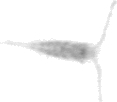
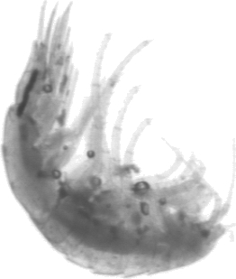
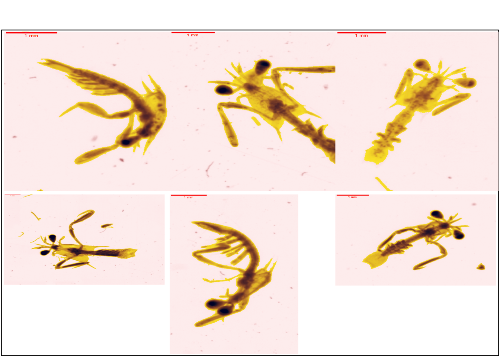

2 Plankton_crustacea
2.1 Copepoda
Copepods are a very abundant class of crustacea within the planktonic organisms. For this reason they are separated from the other crustaceans. THe classification of copepoda is based on the morphology especially on the size of the antennule, the chepalosome et urosme (Figure 2.1).
The three orders differ in the following ways:
- Calanoids have antennules longer than the cephalosome and the urosome smaller than the prosome (@fig-calanoida).

- Cyclopoida have antennules longer than the cephalosome and the urosome the same length as the prosome (Figure 2.3).
- Harpacticoida have antennules smaller than cephalosome and an inconspicuous division between the urosome and prosome
2.1.1 Gymnoplea
2.1.1.1 Calanoida
2.1.1.1.1 Eucalanidae
These copepods are large. They have fairly large antennules. The urosome is short and can be distinguished from the prosome. The head is triangular and quite clear in the vignettes (Figure 2.5).
plot_vignettes(vigns, group = "Eucalanidae", nx = 2, ny =2)This group is similar to the Eucalanidae group in ZooScanNet (Figure 2.6).
2.1.2 Podoplea
2.1.2.1 Cyclopoida
The poecilostomatoida is often cited in the literature. However, this order was first reclassified as the suborder Cyclopoida. Later this suborder was reclassified into the suborder Ergasilida (Khodami et al. 2020).
2.1.2.1.1 Corycaeidae
In previous studies (and associated training sets), this group was not studied.
This small copepod is an ancient member of the Poecilostomatoidea. These organisms have a rectangular head with short antennae (Figure 2.7).
plot_vignettes(vigns, group = "Corycaeidae", nx = 3, ny =3)This group is similar to the Corycaeidae group in ZooScanNet (Figure 2.8).

2.1.2.1.2 Oithonidae
Oithonidae is a good example of a cyclopoid with long antennules (much longer than the head) and a urosome of equivalent size to the prosome (Figure 2.15).
plot_vignettes(vigns, group = "Oithonidae", nx = 4, ny =3)This group is similar to the Oithonidae group in ZooScanNet (Figure 2.10).

2.1.2.1.3 Oncaeidae
This section is not yet complete
In previous studies (and associated training sets), this group was not studied.
These copepods are small. This group does not fit the general description of cyclopoida. The distinction between the prosoma and the urosoma is well marked. This group used to be a member of the Poecilostomatoidea. Females may have an egg sac attached to the genital segment.
Figure 2.11 shows several vignettes of Oncaeidae.
plot_vignettes(vigns, group = "Oncaeidae")This group is similar to the Oithonidae group in ZooScanNet (Figure 2.10).
2.1.2.1.4 Sapphirinidae
In previous studies (and associated training sets), this group was not studied.
2.1.2.1.5 Copilia
This small copepod is rather transparent with a rectangular head with a dark eye in the centre of the body (in the centre of the prosoma).
These organisim mau be a Copelia (currently being checked)
This group is similar to the Copilia group in ZooScanNet (Figure 2.13).
2.1.2.1.6 Sapphirinidae_other
In previous studies (and associated training sets), this group was not studied.
The Sapphirinidae is a family of Ergasilida suborder (Figure 2.14).

Figure 2.15 shows several vignettes of Sapphirinidae.
plot_vignettes(vigns, group = "Sapphirinidae_other", nx = 3, ny =3)This group is similar to the Sapphrinidae group in ZooScanNet (Figure 2.16).

2.1.2.2 Harpacticoida
The order of Harpactidoida is composed of several families which have very different forms. The previous study by Dugauquier (2019) highlighted mainly the Euterpina
plot_vignettes(vigns, group = "Harpacticoida", nx = 3, ny =3)This group is similar to the harpacticoida group in ZooScanNet. This order is composed of several families such as Distioculus, Goniopsyllus (Figure 2.18) or Euterpina (Figure 2.19).
The Goniopsyllus family may remind one of the Sapphirina family. However, these organisms have a rostrum on the top of the head.
Figure 2.19 shows several Euterpina family.
2.2 Crustacea_other
This group includes all crustacea except the copepods.
2.2.1 Branchiopoda
2.2.1.1 Onychopoda
Onychopoda is an order of branchiopoda.
2.2.1.1.1 Evadne
In previous studies (and associated training sets), this group was not studied.
Evadne have a conical and pointed shell. The compound eye is dark and the carapace is light on the vignette Figure 2.20 .
plot_vignettes(vigns, group = "Evadne", nx = 3, ny =3)This group is similar to the Evadne group in ZooScanNet (Figure 2.21).
2.2.1.1.2 Podon
In previous studies (and associated training sets), this group was not studied.
Podon are an Onychopoda as Evadne. The head of the Evadne is in the prolongation of the carapace whereas for the podon there is a break between the head and the carapace
This group is similar to the Podon group in ZooScanNet (Figure 2.22).
2.2.1.2 Ctenopoda
2.2.1.2.1 Penilia
In previous studies (and associated training sets), this group was not studied.
Penilia has two well-marked antennae giving a V-shapean. A spine is very pronounced.
This group is similar to the Penilia group in ZooScanNet (Figure 2.23).

2.2.2 Malacostraca
2.2.2.1 Decapoda
2.2.2.1.1 Anomura_zoea
The eyes are dark with a well-developed telson and a clear cephalothorax (Figure 2.24).
vigns_porcellanidae <- fs::dir_ls(
here::here("images/01plankton_crustacea/decapoda_larva/anomura_zoea_larva/"),
type = "file", glob = "*.png", recurse = TRUE)
plot_vignettes(vigns_porcellanidae , nx = 3, ny =3)
This group includes the zoea__Galatheidae group in ZooScanNet (Figure 2.25).
Porcellanidae belongs to the anomura (Figure 2.26). They have a very long rostrum, a clear cephalothorax with two needles. In the previous study, the anomura included only this group.
plot_vignettes(vigns, group = "Anomura_zoea", nx = 3, ny =3)2.2.2.1.2 Brachyura_zoea
Brachyura are the true crabs with a short abdoman hidden under the cephalothorax (Ruppert, Fox, and Barnes 2004). They are a long rostrum and a long dorsal spine (Figure 2.20).
plot_vignettes(vigns, group = "Brachyura_zoea", nx = 3, ny =3)This group is similar to the Brachyura group in ZooScanNet (Figure 2.28).
2.2.2.1.3 Decapoda_other_zoea
This section is not yet complete
2.2.2.1.4 Decapoda_megalopa
The cephalothorax is well developed while the abdomen is reduced (Figure 2.29).
plot_vignettes(vigns, group = "Decapoda_megalopa", nx = 4, ny =3)This group is similar to the Megalopa group in ZooScanNet (Figure 2.30).


2.2.2.1.5 Luciferidae
In previous studies (and associated training sets), this group was not studied.
This group is similar to the Luciferidae group in ZooScanNet (Figure 2.31).
2.2.2.2 Euphausiacea
One of the well-known species of this order is the krill.
2.2.2.2.1 Euphausiacea_calyptopsis
Calyptopsis is one of the development stages of the euphausiacea. Calyptopis have an almost right angle between the carapace and the telson. The carapace is clear. The carapace is wider than the telson (Figure 2.32).
plot_vignettes(vigns, group = "Euphausiacea_calyptopsis")This group is similar to the Calyptopsis group in ZooScanNet (Figure 2.33).
2.2.2.3 Malacostraca_other
2.2.2.4 Amphipoda
2.2.2.4.1 Senticaudata
This section is not yet complete
In previous studies (and associated training sets), this group was not studied.
The Suborder of Senitcaudata includes the gammaridae. The head and the peraeon are continuous. The eyes are small.
plot_vignettes(vigns, group = "Senticaudata", nx = 2, ny =2)This group is similar to the Gammaridea group in ZooScanNet (Figure 2.35).


2.2.2.4.2 Hyperiidea
The hyperiidea are not a very present group. There are few images in the ZooScanNet (Elineau et al. 2018). We find in the vignettes of Phronimidae, Platyscelidae or Oxycephalidae (Figure 2.36).
plot_vignettes(vigns, group = "Hyperiidae", nx = 3, ny =2)This group is similar to the Hyperiidea group in ZooScanNet (Figure 2.37).

2.2.2.5 Isopoda
This section is not yet complete
Very few organisms were found in previous studies (Dugauquier 2019). The main characteristics are … (Figure 2.38).
plot_vignettes(vigns, group = "Isopoda", nx = 3, ny =2)2.2.2.6 Stomatopoda
The Stomatopoda are known mainly because they contain the mantis shrimps, predators of fish, molluscs and other crustaceans (Ruppert, Fox, and Barnes 2004). Very few organisms were found in previous studies (Dugauquier 2019).These organisms are easily identifiable.
2.2.2.6.1 Stomatopoda_antizoea
Antizoea have a long rostrum and two long spines . The eyes are darker on the vignette (Figure 2.39). These organisms look like darts.
plot_vignettes(vigns, group = "antizoea", nx = 3, ny =3)2.2.2.6.2 Stomatopoda_pseudozoea
The pseudozoa larva looks like a mantis (Figure 2.40).
plot_vignettes(vigns, group = "pseudozoea", nx = 3, ny =2)
2.2.3 Ostracoda
In previous studies (and associated training sets), this group was not studied.
This group is similar to the Ostracoda group in ZooScanNet (Figure 2.41).